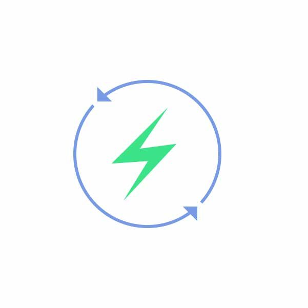

t a time when feeding the growing population is become even more difficult, we utilize GIS and remote sensing techniques to strategize crop management.

Power is Power. Energy is the key to development, but so is capital management.
Make assets and operations management more efficient and reduce response time for maintenance using geospatial planning.
Location analytics can put the where in your business.
Identify where your customers are, or where you need to put your next store, to make smarter decisions for growing your business